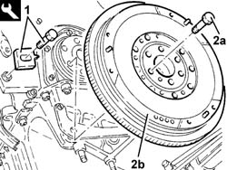

1024B22 ENGINE FLYWHEEL - R.R. with clutch removed for versions with manual gearbox
- Path
- Procedures > 10 ENGINE > 1024 CRANKSHAFT AND FLYWHEEL > 1024B ENGINE FLYWHEEL > 1024B22 ENGINE FLYWHEEL - R.R. with clutch removed for versions with manual gearbox
- Kind
- repair procedure (removal / refitting; the operation number is the code)
- Applies to
- engines: 2.4 JTD 10V; all production periods
- Interactive page
- https://sloeber94.github.io/elrnDB-lThss/en/#/75655
Applies to: all engines; all production periods
 Removing
Removing
 Refitting
Refitting1. Position the flywheel lock to stop the rotation of the crankshaft.
 | Description | Code | Function |
|---|---|---|---|
1 | Counter-torque | 1.860.846.000 | Flywheel lock |
2. Undo the fixing bolts (2a) and remove the flywheel (2b).

Applies to: all engines; all production periods
Refitting
Removing- Fit the flywheel in the housing in the crankshaft.
- Screw in the fixing bolts and then tighten them to torque.
 | Value - daNm | Fastening | Component | Ø |
|---|---|---|---|---|
. | 16 | Bolts | FLYWHEEL (MECH.) | M12 |
- Remove the flywheel lock.
| Description | Code | Function |
|---|---|---|---|
. | Counter-torque | 1.860.846.000 | Flywheel lock |